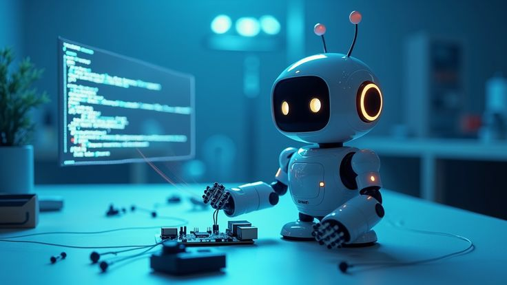
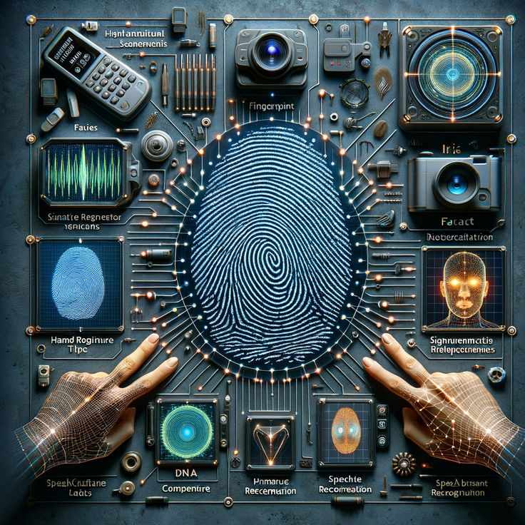
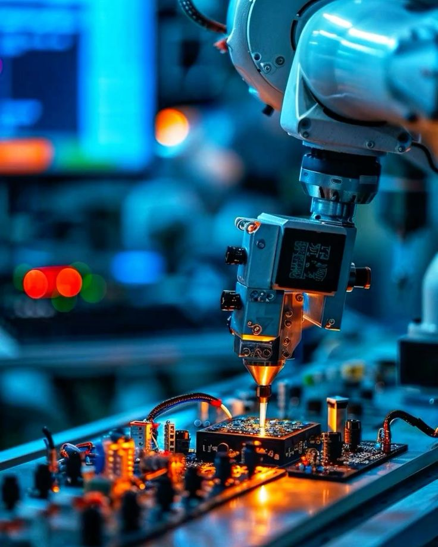
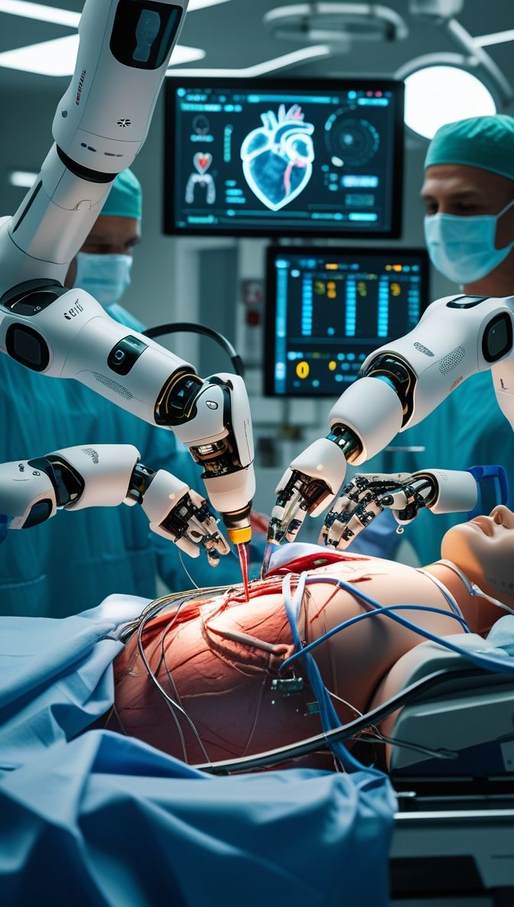

¿Qué es un Robotics Process?
Un Robotics Process es el conjunto ordenado de etapas necesarias para diseñar, construir, programar, probar y mejorar un sistema robótico. El objetivo es transformar una necesidad o problema en una solución automatizada capaz de interactuar con el mundo real.
Percepción
El robot utiliza sensores y cámaras para obtener información sobre el entorno y detectar cambios o eventos.
Procesamiento
Los datos obtenidos son analizados por el sistema de control para interpretar la situación y determinar qué hacer.
Acción
Los actuadores ejecutan las instrucciones para producir movimiento, manipulación o cualquier respuesta programada.
Imágenes de Percepción Robótica

Etapas del Desarrollo Robótico
Crear un robot inteligente requiere seguir una metodología organizada. Cada etapa permite validar el funcionamiento del sistema antes de avanzar a la siguiente.
Identificación
Se define el problema que el robot debe resolver y las necesidades que debe satisfacer.
Diseño
Se establece la estructura física, electrónica y lógica del sistema.
Construcción
Se integran piezas mecánicas, circuitos, sensores, controladores y actuadores.
Programación
Se desarrolla el software que controla el comportamiento y las decisiones del robot.
Pruebas
Se comprueba el funcionamiento, precisión, seguridad y capacidad de respuesta del sistema.
Optimización
Se corrigen errores y se mejora el rendimiento para lograr un sistema más eficiente e inteligente.
Galería del Proceso Robótico

Componentes de un Sistema Robótico
Un sistema robótico inteligente necesita diferentes elementos trabajando de forma coordinada.
Sensores
Capturan información del entorno: distancia, luz, temperatura, movimiento, presión o imágenes.
Controlador
Procesa la información recibida y coordina las decisiones que debe tomar el sistema.
Actuadores
Transforman las instrucciones del controlador en acciones físicas mediante motores, servos u otros mecanismos.
Software e IA
Permite programar comportamientos, analizar datos, reconocer patrones y tomar decisiones.
Componentes Visuales


Aplicaciones de la Robótica Inteligente
Los sistemas robóticos pueden utilizarse en diferentes áreas para automatizar tareas, aumentar la precisión y mejorar la eficiencia de los procesos.
Aplicaciones de la Robótica


El futuro de los Robotics Process
La evolución de la inteligencia artificial, la visión artificial, los sensores y la automatización permitirá desarrollar robots cada vez más autónomos y capaces de colaborar con las personas. El objetivo será construir sistemas seguros, adaptables y eficientes que puedan resolver problemas complejos en entornos reales.